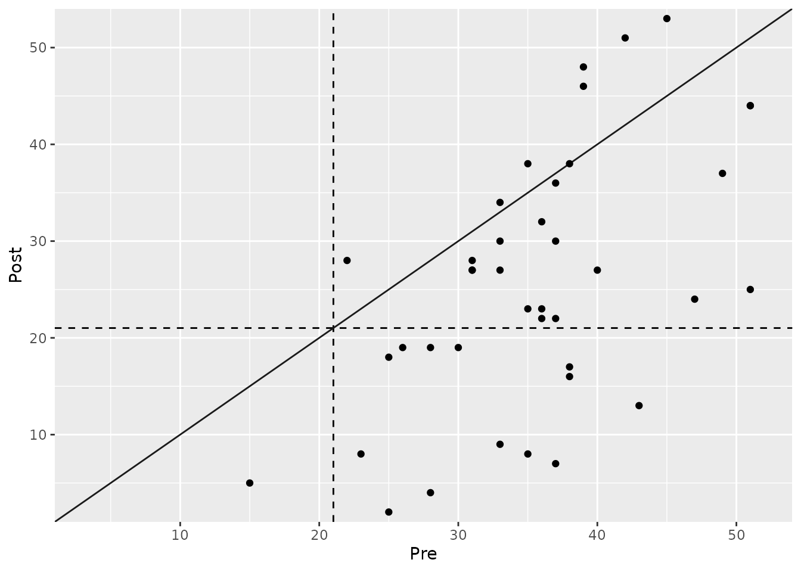
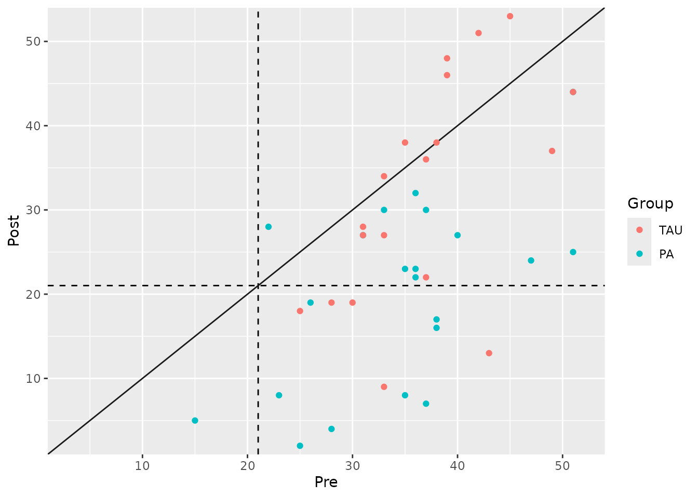

Analyzing Clinical Significance: The Statistical Approach
2025-09-05
Source:vignettes/statistical-approach.Rmd
statistical-approach.RmdIntroduction
The statistical approach to clinical significance evaluates whether a patient has moved from a dysfunctional (“clinical”) population to a functional (“non-clinical”) population as a result of an intervention. This method is based on the idea that a meaningful change involves not just a reduction in symptoms, but a transition to a state of healthy functioning.
To apply this method, we must first define the score distributions of both the clinical and functional populations. From these, we calculate a cutoff score that optimally separates the two groups. A patient is then considered to have made a clinically significant change if they were in the clinical range before treatment and in the functional range after treatment.
This vignette demonstrates how to use the
cs_statistical() function to perform this analysis. It’s
important to note that this method is a key component of the powerful
Combined Approach, which is often the most informative
way to assess clinical significance.
Defining Populations and Calculating a Cutoff
The most crucial step in this approach is defining the functional population. This requires obtaining summary statistics (mean and standard deviation) for the outcome measure from a relevant non-clinical or healthy sample.
For our example using the BDI-II from the claus_2020
dataset, we will use normative data from Kühner et al. (2007), who
reported a mean of 7.69 and a standard deviation of 7.52 for a German
non-clinical sample.
The clinicalsignificance package provides three methods
for calculating the cutoff, specified by the cutoff_type
argument: - "a": Based only on the
clinical sample’s distribution. - "b":
Based on the functional sample’s mean and the clinical sample’s standard
deviation. - "c":
(Recommended) Incorporates the mean and standard
deviation from both the clinical and functional populations to
find an optimal midway point. This is generally the most robust and
objective choice.
Example Analysis
Let’s perform the analysis using the recommended cutoff type “c”. The
function will automatically calculate the mean and standard deviation
for the clinical sample from the claus_2020 pre-treatment
data.
# Perform the statistical analysis
stat_results <- claus_2020 |>
cs_statistical(
id = id,
time = time,
outcome = bdi,
pre = 1,
post = 4,
m_functional = 7.69,
sd_functional = 7.52,
cutoff_type = "c"
)
summary(stat_results)
#>
#> ---- Clinical Significance Results ----
#>
#> Approach: Statistical
#> Method: JT
#> N (original): 43
#> N (used): 40
#> Percent used: 93.02%
#> Cutoff type: c
#> Cutoff: 21.02
#>
#> -- Cutoff Descriptives
#>
#> M Clinical | SD Clinical | M Functional | SD Functional
#> -------------------------------------------------------
#> 35.48 | 8.16 | 7.69 | 7.52
#>
#>
#> -- Results
#>
#> Category | N | Percent
#> ---------------------------
#> Improved | 13 | 32.50%
#> Unchanged | 27 | 67.50%
#> Deteriorated | 0 | 0.00%The summary tells us that the calculated cutoff score is 21.6. Based on this, 32.5% of patients were classified as “Improved,” meaning they started above this cutoff (in the clinical range) and ended below it (in the functional range).
Visualizing the Results
The plot for the statistical approach is unique. It features two dashed lines representing the cutoff score on both the pre-treatment (x-axis) and post-treatment (y-axis). These lines divide the plot into four quadrants:
- Top-Right: Clinical before and after (Unchanged).
- Bottom-Left: Functional before and after (Unchanged).
- Bottom-Right: Clinical before, functional after (Improved).
- Top-Left: Functional before, clinical after (Deteriorated).
plot(stat_results)
Grouped Analysis
We can also investigate if the proportion of patients who transitioned to the functional population differs between the treatment groups (TAU vs. PA).
# Grouped statistical analysis
stat_grouped <- claus_2020 |>
cs_statistical(
id = id,
time = time,
outcome = bdi,
pre = 1,
post = 4,
m_functional = 7.69,
sd_functional = 7.52,
cutoff_type = "c",
group = treatment
)
summary(stat_grouped)
#>
#> ---- Clinical Significance Results ----
#>
#> Approach: Statistical
#> Method: JT
#> N (original): 43
#> N (used): 40
#> Percent used: 93.02%
#> Cutoff type: c
#> Cutoff: 21.02
#>
#> -- Cutoff Descriptives
#>
#> M Clinical | SD Clinical | M Functional | SD Functional
#> -------------------------------------------------------
#> 35.48 | 8.16 | 7.69 | 7.52
#>
#>
#> -- Results
#>
#> Group | Category | N | Percent | Percent by Group
#> ------------------------------------------------------
#> TAU | Improved | 5 | 12.50% | 26.32%
#> TAU | Unchanged | 14 | 35.00% | 73.68%
#> TAU | Deteriorated | 0 | 0.00% | 0.00%
#> PA | Improved | 8 | 20.00% | 38.10%
#> PA | Unchanged | 13 | 32.50% | 61.90%
#> PA | Deteriorated | 0 | 0.00% | 0.00%The analysis reveals a substantial difference: 47.6% of patients in the Placebo Amplification (PA) group moved into the functional range, compared to only 15.8% in the Treatment as Usual (TAU) group.
The plot makes this difference visually apparent:
plot(stat_grouped)
Summary and Next Steps
The statistical approach provides a powerful criterion for clinical significance by focusing on a patient’s end-state functioning.
- Strength: It defines recovery in an absolute sense (return to normality) rather than just relative change.
- Limitation: It requires reliable normative data for a functional population, which may not always be available. Also, it doesn’t consider the magnitude of change for patients who do not cross the cutoff.
This is why the statistical approach is most powerful when used as part of a Combined Approach, where it is paired with a measure of reliable or meaningful change. We highly recommend reviewing the vignette on the Combined Approach to see how to integrate these concepts for the most comprehensive assessment of patient outcomes.